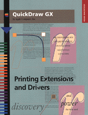

QuickDraw GX Printing Extensions and Drivers
Inside Macintosh: QuickDraw GX Printing Extensions and Drivers describes how to create printing extensions and printer drivers that work with QuickDraw GX, the object-based graphics programming environment. Before reading this book, you need to be familiar with the general concepts of QuickDraw GX, as described in Inside Macintosh: QuickDraw GX Objects. You should also have read Inside Macintosh: QuickDraw GX Printing to understand how QuickDraw GX printing works from an application perspective. Inside Macintosh: QuickDraw GX Printing Extensions and Drivers starts by introducing the QuickDraw GX printing architecture and explaining how printing extensions and drivers are implemented using a message-based system. The book then describes- how to develop a printing extension
- how to develop a printer driver
- the printing messages that your extension or driver can override
- the printing functions that your extension or driver can call
- the resources that you include to define the behavior of your extension or driver
Availability: Click below to obtain Inside Macintosh: QuickDraw GX Printing Extensions and Drivers in any of the following formats.

|
Acrobat (1956K) |